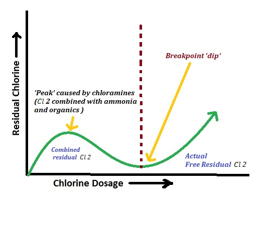

ENGINEERING CHEMISTRY – UNIT 1 (WATER TECHNOLOGY) – PART B
Water quality parameters are the measurable physical, chemical and biological characteristics of water which decide whether the given water sample is suitable for domestic, industrial and drinking purposes.
Definition: Shade or appearance imparted to water mainly by dissolved organic matter and inorganic impurities such as iron and manganese salts.
Significance:
- Aesthetically objectionable if highly coloured.
- Indicates presence of decaying organic matter or metallic impurities.
- Interferes with industrial uses such as textile dyeing and paper manufacture.
Definition: Taste is the sensation produced in the mouth; odour is the smell due to volatile substances, gases or algal growth.
Significance:
- Unpleasant taste or odour makes water unfit for drinking.
- Indicates pollution by sewage or industrial effluents.
- Chlorination in presence of organics may produce medicinal or phenolic odour.
Definition: Loss of clarity of water due to finely divided suspended impurities such as clay, silt, silica and microorganisms.
Significance:
- Reduces aesthetic quality and gives muddy appearance.
- Shields microorganisms from disinfectants and reduces efficiency of chlorination.
- Blocks light penetration and affects photosynthesis and aquatic life.
Definition: Negative logarithm of hydrogen ion concentration, indicating acidity or alkalinity of water.
Significance:
- Controls solubility of salts and corrosion or scaling in pipelines and boilers.
- Affects biological availability of nutrients and toxicity of pollutants.
- Safe range for drinking water is usually 6.5–8.5.
Definition: Acid neutralizing capacity of water mainly due to bicarbonates, carbonates and hydroxides.
Significance:
- High alkalinity causes scale formation in boilers and heat exchangers.
- Acts as a buffer and resists sudden change in pH in natural waters.
- Excess NaOH in boiler water may lead to caustic embrittlement.
Definition: Property of water which prevents lather formation with soap and forms scum due to dissolved Ca2+ and Mg2+ salts.
Significance:
- Causes wastage of soap and detergents.
- Produces scale in boilers and pipes, reducing heat transfer.
- Very soft water may be corrosive; controlled hardness is often desirable.
Definition: Total concentration of all dissolved inorganic and organic substances present in water (mg/L).
Significance:
- Controls taste and palatability of water.
- High TDS (> 500–1000 mg/L) makes water unsuitable for drinking and many industries.
- Causes scaling and corrosion problems and affects crop yield in irrigation.
Definition: Naturally occurring fluoride ions mainly from fluoride-bearing minerals.
Significance:
- Optimum level (0.7–1.2 mg/L) prevents dental caries.
- Low concentration causes dental decay.
- Excess fluoride (> 1.5 mg/L) leads to dental and skeletal fluorosis.
Definition: Toxic metalloid entering water from rocks, mining and industrial activities.
Significance:
- Even small concentrations are carcinogenic.
- Causes skin lesions, hypertension and various cancers on long-term intake.
- Hence, very strict permissible limit (about 0.01 mg/L) is fixed for drinking water.
Definition: Amount of oxygen required to chemically oxidize all oxidisable impurities present in water using a strong oxidant.
Significance:
- Indicates total pollution strength of industrial effluents and sewage.
- Used for designing and assessing efficiency of treatment plants.
- High COD depletes dissolved oxygen in receiving waters and kills aquatic life.
Definition: Amount of dissolved oxygen required by microorganisms to oxidize biodegradable organic matter over a specified time (usually 5 days at 20°C).
Significance:
- Measures amount of decomposable organic pollution present in water.
- Low BOD (< 3 ppm) indicates good quality water; high BOD shows polluted water.
- Essential parameter for sewage treatment plant design.
Municipal water treatment converts raw water from natural sources into potable water that is clear, colourless, odourless, safe and pleasant for public supply.
- Protects pumps and mechanical equipment from damage.
- Reduces load on subsequent treatment units.
- Removes dissolved gases like CO₂ and H₂S which cause odour and corrosion.
- Oxidizes dissolved iron and manganese to insoluble forms that can be filtered.
- Increases dissolved oxygen content.
- Coagulants such as alum or ferric salts are rapidly mixed with water.
- They hydrolyse to form gelatinous Al(OH)₃/Fe(OH)₃, which adsorb colloidal particles forming flocs.
- Slow stirring (flocculation) allows these flocs to grow heavier and ready to settle.
- Removes about 70–75% of suspended impurities.
- Sludge is periodically removed from the bottom.
- Coagulated and settled water is passed downward through the filter bed.
- Fine suspended particles, flocs and most bacteria are removed by straining, adsorption and biological action.
- Filtered water is collected through under-drains.
- Ozonation: Ozone decomposes to nascent oxygen which kills bacteria and viruses. Gives excellent disinfection with no residual taste, but is costly.
- Ultraviolet (UV) Treatment: UV rays damage the DNA of microorganisms. It is clean but leaves no residual disinfectant.
- Chlorination: Chlorine (gas, bleaching powder or chloramines) forms hypochlorous acid (HOCl), a powerful germicide. Break-point chlorination ensures complete oxidation and residual chlorine for future protection.
Disinfected water is stored in covered service reservoirs to provide contact time and then distributed through pipelines. Residual chlorine of about 0.2–0.5 mg/L is maintained at distant points to ensure safety.
When hard or improperly treated water is used in boilers, several operational problems collectively called boiler troubles occur. The important troubles are scale and sludge formation, boiler corrosion, caustic embrittlement and priming & foaming.
Nature: Hard, adherent deposits (scales) or loose deposits (sludge) on inner boiler surfaces.
Causes:
- Precipitation of CaCO₃, CaSO₄, Mg(OH)₂ and other sparingly soluble salts at high temperature and pressure.
- Sludge from salts like MgCl₂, MgSO₄, NaCl forming loose flocs.
Disadvantages:
- Wastage of fuel due to poor heat transfer.
- Overheating and cracking of boiler metal, sometimes leading to explosion.
- Choking of pipes and reduction in boiler efficiency.
Prevention:
- External water softening by lime-soda, zeolite or ion-exchange processes.
- Internal conditioning (phosphate, carbonate, calgon or colloidal conditioning) to convert scale into removable sludge.
- Regular blow-down and mechanical cleaning of boilers.
Definition: Destruction of boiler metal by chemical or electrochemical action of dissolved gases and salts.
Causes:
- Dissolved oxygen forming rust.
- CO₂ producing carbonic acid and attacking metals.
- Low pH or free acids from hydrolysis of MgCl₂, etc.
- Galvanic corrosion between different metal parts.
Prevention:
- Mechanical deaeration and use of oxygen scavengers like sodium sulphite or hydrazine.
- Maintaining slightly alkaline pH with ammonia or phosphate.
- Using corrosion-resistant materials and protective coatings.
Definition: Cracking and brittleness of boiler metal, especially at stressed riveted joints, due to highly concentrated NaOH.
Mechanism (brief): NaOH enters minute cracks and concentrates by evaporation; it attacks the iron along grain boundaries forming sodium ferrite and leads to inter-crystalline cracking.
Prevention:
- Avoiding excessive use of Na₂CO₃ and NaOH in boiler water.
- Using phosphate conditioning rather than carbonate alone.
- Adding lignin, tannin etc., which form protective complex layers on metal.
Priming: Carryover of water droplets with steam due to high water level, rapid boiling or sudden change in pressure.
Foaming: Formation of stable froth on water surface due to presence of oil, grease and dissolved solids.
Effects:
- Wet steam of poor quality; salt deposits in superheater and turbine.
- Irregular working of boiler and loss of efficiency.
Prevention:
- Proper external treatment to remove oil, grease and dissolved solids.
- Use of antifoaming agents like castor oil or octyl alcohol.
- Maintaining correct water level and controlled firing rate.
Zeolite or permutit process is an external softening method in which hard water is passed through a bed of sodium zeolite, and all hardness-causing cations (Ca²⁺, Mg²⁺) are exchanged with Na⁺ ions.
Ca²⁺ + Na₂Z → CaZ + 2Na⁺
Mg²⁺ + Na₂Z → MgZ + 2Na⁺
Thus, Ca²⁺ and Mg²⁺ are retained on the zeolite and equivalent Na⁺ ions enter water, producing soft water containing only sodium salts.
- Hard water is allowed to flow through a cylindrical tank packed with sodium zeolite.
- At the outlet, soft water with very low hardness is obtained.
- After some time zeolite is exhausted (converted into CaZ and MgZ) and cannot soften water further.
- Exhausted zeolite is regenerated by passing 10% NaCl (brine) solution.
- CaZ + 2Na⁺ → Na₂Z + Ca²⁺ (similarly for MgZ).
- The washings containing Ca²⁺ and Mg²⁺ are drained and zeolite regains its activity.
- Residual hardness is very low; plant is compact and simple to operate.
- However, water containing turbidity, oil or iron must be pretreated, and highly acidic water cannot be handled.
Internal conditioning is the treatment given inside the boiler by adding chemicals which react with scale-forming impurities and convert them into soft, non-adherent sludge or harmless soluble complexes.
- Suitable for high-pressure boilers.
- Sodium phosphates react with Ca²⁺, Mg²⁺ forming soft phosphate sludge.
- Example: 3Ca²⁺ + 2PO₄³⁻ → Ca₃(PO₄)₂ ↓
- Na₂CO₃ converts CaSO₄ into CaCO₃ sludge which can be removed by blow-down.
- Excess Na₂CO₃ forms NaOH, so care is taken to avoid caustic embrittlement.
- Organic substances like tannin, lignin or starch are added.
- They adsorb on precipitated particles and keep them in dispersed, non-adherent form.
- Calgon is sodium hexametaphosphate.
- It forms soluble complexes with Ca²⁺ and Mg²⁺ and prevents deposition of scale.
- NaAlO₂ hydrolyses to form Al(OH)₃ floc which carries suspended particles down as sludge.
- Also helps in maintaining suitable alkalinity of boiler water.
Demineralization or deionization is the process of removing all cations and anions from water using ion exchange resins, producing almost pure water with very low conductivity.
- Cation exchange resin (R–H): Acidic resin exchanging H⁺ with all cations (Ca²⁺, Mg²⁺, Na⁺, etc.).
- Anion exchange resin (R–OH): Basic resin exchanging OH⁻ with all anions (Cl⁻, SO₄²⁻, HCO₃⁻, etc.).
2R–H + Ca²⁺ → R₂Ca + 2H⁺
2R–H + Mg²⁺ → R₂Mg + 2H⁺
Water leaving this column contains only acid (HCl, H₂SO₄, H₂CO₃) – called acidic water.
R–OH + Cl⁻ → R–Cl + OH⁻
2R–OH + SO₄²⁻ → R₂SO₄ + 2OH⁻
H⁺ from first column combines with OH⁻ from second column to form pure water: H⁺ + OH⁻ → H₂O
- Contains almost no dissolved salts; residual hardness below 1 ppm.
- Used for high-pressure boiler feed, pharmaceuticals and electronics industries.
- Because it is slightly corrosive, pH is adjusted before use.
Ion exchange is a reversible process in which ions from water are exchanged with ions fixed to an insoluble resin matrix. It involves cation and anion exchangers arranged in series.
- Two vertical columns: one filled with cation resin (R–H), the other with anion resin (R–OH).
- Raw water first flows through the cation column, then through the anion column.
- Sometimes a mixed-bed column with both resins is used for final polishing.
- Cation stage: All cations are replaced by H⁺ ions – water becomes acidic.
- Anion stage: All anions are replaced by OH⁻ ions – H⁺ and OH⁻ combine to form pure water.
- Regeneration: Cation resin regenerated with acid; anion resin with alkali.
- Complete Demineralization:
- Ion exchange removes all cations and anions, giving nearly pure deionised water.
- Zeolite process removes only Ca²⁺ and Mg²⁺; other dissolved solids remain as Na⁺ salts.
- Residual Hardness:
- Ion exchange: residual hardness < 1 ppm – suitable for high-pressure boilers.
- Zeolite: residual hardness around 10 ppm – adequate only for low/medium pressure.
- Type of Water Treated:
- Ion exchange can treat highly saline water, acidic water and even remove silica.
- Zeolite fails if water is turbid, oily or strongly acidic; Fe and Mn foul the zeolite bed.
- Quality of Product Water:
- Ion-exchange water has very low conductivity and is ideal for sensitive industries.
- Zeolite soft water still contains considerable dissolved solids and is unsuitable where ultra-pure water is required.
- Control of pH:
- In ion exchange, pH can be accurately adjusted after demineralization.
- In zeolite, water is slightly alkaline due to sodium salts; control is limited.
- Automation and Flexibility:
- Ion exchange units can be easily automated using conductivity or hardness monitors.
- Zeolite plants are comparatively less flexible and often manually operated.

Reverse osmosis (RO) is a pressure-driven membrane process for desalination in which water is forced through a semi-permeable membrane from a concentrated solution to a dilute side, opposite to natural osmosis.
- High-pressure pump to pressurize brackish feed water.
- Membrane modules (spiral-wound or hollow fibre) made of cellulose acetate or thin-film polyamide.
- Feed water inlet, product (permeate) outlet and brine (reject) outlet.
- Pre-treatment units such as cartridge filters, pH adjustment and anti-scalant dosing.
- Raw brackish water is pre-treated to remove suspended solids, chlorine and microorganisms which may foul the membrane.
- Pre-treated water is pumped at a pressure greater than its osmotic pressure (typically 10–100 atm) to the concentrated side of RO membrane.
- Water molecules diffuse through the semi-permeable membrane to the low-pressure side, forming permeate with very low salt content.
- Dissolved salts, colloidal impurities and most organic molecules are rejected and discharged as concentrated brine.
- Permeate water can be collected and, if necessary, remineralised for taste before distribution.
- Removes 95–99% of dissolved salts and almost all colloids and bacteria.
- No phase change; hence energy requirement is lower than distillation.
- Compact, modular units suitable for coastal towns, ships and industries.
- Operation and control can be largely automated.
- Membranes are expensive and prone to fouling; require regular cleaning and replacement.
- High-pressure pumps involve significant power cost.
- Pre-treatment is essential to protect membrane life.

Break-point chlorination is the process of adding chlorine to water until the chlorine demand is satisfied and a small free residual chlorine appears. The point on the chlorine dose–residual chlorine curve at which this occurs is called the break-point.
When increasing amounts of chlorine are added to polluted water and residual chlorine (after contact time) is plotted, a curve with four distinct zones is obtained:
- At low dosages, chlorine reacts with reducing substances (Fe²⁺, H₂S, organic matter, etc.).
- No residual chlorine is observed because all added chlorine is consumed in oxidation.
- Further addition of chlorine reacts with ammonia and nitrogenous compounds to form chloramines (combined chlorine).
- Residual chlorine increases slowly; water may have medicinal taste and odour.
- Additional chlorine oxidizes chloramines and organic chlorinated compounds.
- Residual chlorine falls because combined chlorine is destroyed, yielding N₂, HCl, etc.
- The lowest point of this curve is the break-point, where most ammonia and organics are destroyed.
- Beyond break-point, any extra chlorine appears as free residual chlorine (HOCl/OCl⁻).
- Residual chlorine increases almost linearly with dose; about 0.2–0.5 mg/L is maintained for safety.
- Complete Oxidation of Impurities: Organic matter, ammonia and reducing substances are almost completely destroyed at break-point, improving odour and colour.
- Effective Disinfection: Free residual chlorine beyond break-point provides strong and lasting germicidal action.
- Control of Taste and Odour: Destruction of chloramines avoids objectionable chlorine odours associated with combined chlorine.
- Guidance for Optimum Dose: Chlorine–residual curve gives clear indication of required chlorine dose for a particular water.